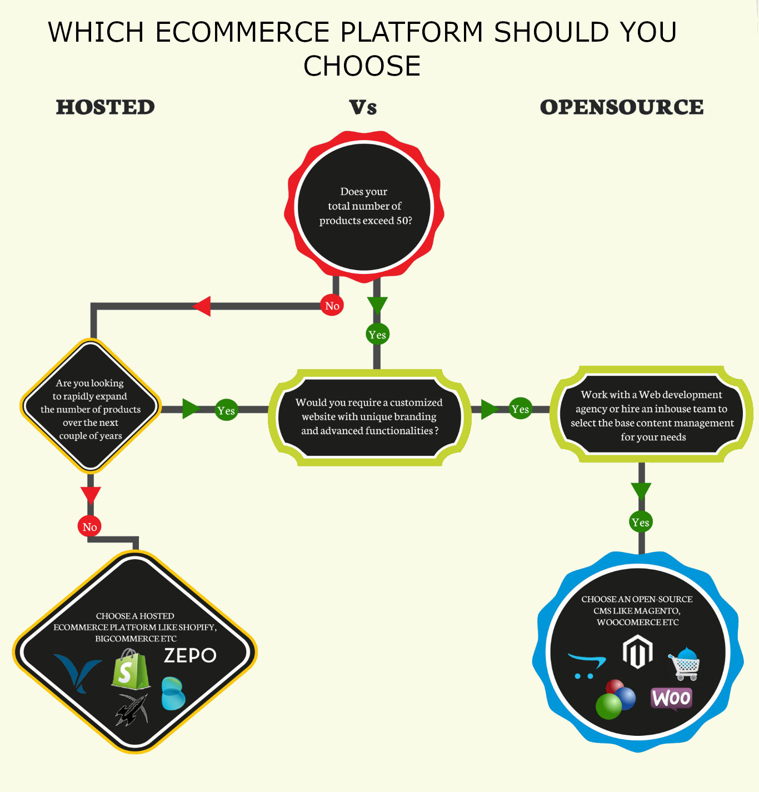

Вместе с быстрым ростом глобального рынка электронной коммерции возросло и количество доступных платформ электронной коммерции и систем управления контентом. В таких условиях узнать, какую платформу следует использовать для создания своего интернет-магазина, может быть достаточно сложной задачей, особенно если у вас нет опыта работы в сфере электронной коммерции. На данном сайте представлены лучшие e-Commerce СMS для интернет-магазина в форме обзора с их преимуществами и недостатками.
Каждый год рейтинг CMS меняется. Лидерские позиции по-прежнему удерживают платформы с открытым исходным кодом и сформировавшимся сообществом, но крепкие позиции также занимает ряд коммерческих CMS. Ниже приведена диаграмма рейтинга CMS (источник: https://w3techs.com/)
Управляемые платформы электронной коммерции против систем управления контентом (CMS)
Есть два варианта для создания интернет-магазина: управляемые (хостинговые) платформы электронной коммерции, как Shopify и BigCommerce, и CMS-системы с открытым исходным кодом, как Magento. Как видно из названия, хостинговая (или размещенная удаленно) платформа электронной коммерции расположена на сервере, к которому у вас нет доступа, в то время как сайты, созданные на базе CMS, размещены в объеме памяти собственного сервера, который вам нужно будет приобрести. Какой из вариантов выбрать, будет во многом зависеть от ваших конкретных нужд, а также от уровня вашей технической грамотности.
Преимущества использования хостинговых платформ электронной коммерции
- Низкие потребности в разработке и обслуживании. Не требуется опыт в написании кода, поэтому нет необходимости в команде разработчиков. Кроме этого, хостинг совместный, что сокращает серверные затраты.
- Улучшенная техническая поддержка. Большинство создателей онлайн-магазинов имеют сильную команду технической поддержки, которая помогает пользователям разобраться с любыми возникающими проблемами.
- Более простая в работе. Административная часть большинства этих платформ удобная в работе и разработана для простоты использования с акцентом на пользователей с ограниченным уровнем технических знаний.
Преимущества использования CMS-системы
- Улучшенная функциональность. Множество доступных плагинов, дополнений и тем для систем управления контентом позволяет добавить расширенные функциональные возможности, недоступные при использовании платформ, размещенных на собственном сервере.
- Улучшенные возможности настройки под клиента. Системы управления контентом позволяют свободно добавлять/изменять функции, а также создавать индивидуальное оформление, которое было бы уникальным для определенной торговой марки. Они также предоставляют постоянные улучшения и оптимизацию взаимодействия с пользователем на сайте, что играет основную роль в современной сфере электронной коммерции, которая характеризуется острой конкуренцией.
- Возможность поддержки крупных магазинов и тщательно разработанных веб-сайтов. Благодаря размещению на собственном сервере, системы управления контентом не имеют ограничения в количестве поддерживаемых продуктов или категорий, поэтому на них можно размещать гораздо более крупные магазины и сложные веб-сайты.
Вы можете воспользоваться схемой, представленной ниже, чтобы определиться, какую платформу выбрать в зависимости от ваших требований: хостинговую платформу электронной коммерции или CMS-систему.

Как только вы определились с выбором типа будущей платформы, вы можете ознакомиться со списком популярных вариантов систем упраления контентом (если выбор пал на них).